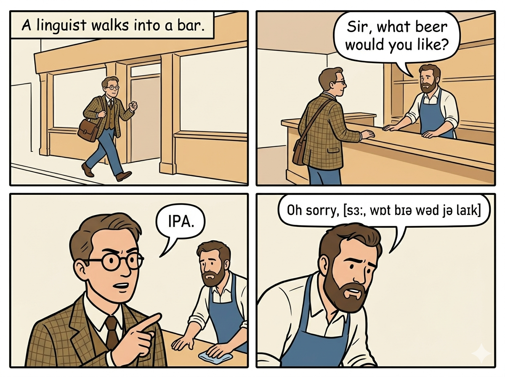
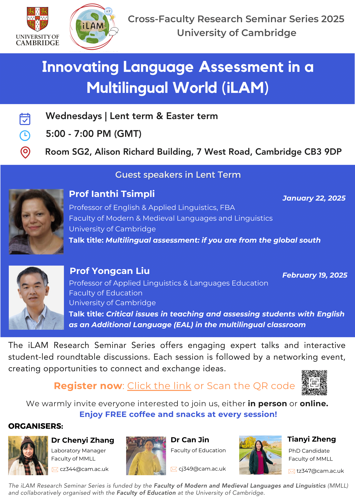

Language is at the core of how humans think, learn, and communicate. In today's globalised and digital world, however, language processing is rarely simple or uniform. People constantly move between languages, scripts, and modalities; they read in one language while speaking in another, or integrate information across text, speech, and images. For many, this flexibility is a source of creativity and connection; for others, it creates barriers to learning, access, and success. Individual differences in working memory, attention, or prior language experience can further shape how effectively people navigate multilingual and multimodal environments. Left unaddressed, these challenges have significant consequences for education, equity, and social inclusion.
My research seeks to understand the cognitive and neural mechanisms that underlie language processing in such complex contexts. My research addresses three overarching questions:
Specifically, I study how the brain integrates information across modalities, e.g., text and images, how bilingualism and writing systems shape language processing, and how individual cognitive differences influence these processes. To answer these questions, I employ a range of methods from psycholinguistics, neurolinguistics, and cognitive psychology, including behavioural experiments, EEG/ERP studies, and meta-analysis. The long-term goal of my research is twofold: to contribute to theoretical models of language processing and to develop evidence-based practices that make language learning more inclusive for diverse populations.
Most of the wiggles in the video are unfortunately just noise, generated while I asked the participant to blink, shift their gaze from one side of the screen to the other, and grit their teeth. But if you watch to the end, you'll see some beautiful alpha waves emerge.

As a massive comic reader and someone who grew up watching Japanese anime, I always wondered how our brains integrate text and picture, and why my mom, a proficient reader and university professor, cannot understand comics at all! For my PhD at Cambridge, I turned my hobbies into actual science. Looking at both English and Chinese speakers, I investigated what exactly makes someone a pro at understanding visual narratives. As it turns out, whether you instantly "get" the big picture depends on a wild mix of your working memory, your language skills, and yes, even how much manga and anime you consumed growing up! (This comic strip is AI-generated.)
In China, children with autism are affectionately referred to as "children from the stars," reflecting their unique perceptions of the world and distinct ways of expressing emotions. This perspective likens them to stars, each shining in their own solitary universe. I am dedicated to exploring the language and cognitive characteristics of the autistic community to enhance their education, social development, and overall quality of life.

Beyond just analyzing how language works in a lab, my research focuses on creating real-world educational innovations. By combining cutting-edge tools like AI, eye-tracking, and computerized dynamic assessment, I look past standard test scores to understand the actual cognitive processes and developmental potential of multilingual learners. From tracking how children acquire language memory to training teachers for better literacy development, my goal is to transform language education from a rigid ranking system into a deeply supportive, tech-driven journey.
I love my hometown, Huzhou, a charming, small city nestled right near Shanghai and Hangzhou, and I wanted to capture the unique rhythm and tones of our local Wu dialect. If you look at the video on the right, you can hear my dad producing these tones. By documenting these sounds, I hope to preserve the beautiful, everyday speech of Huzhou before it gets lost to Mandarin Chinese.